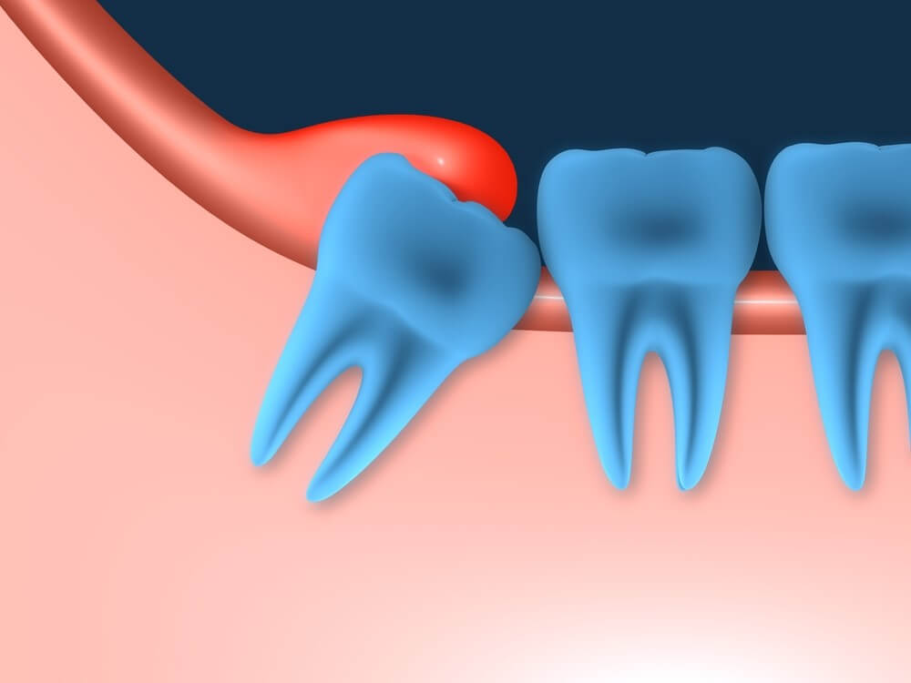
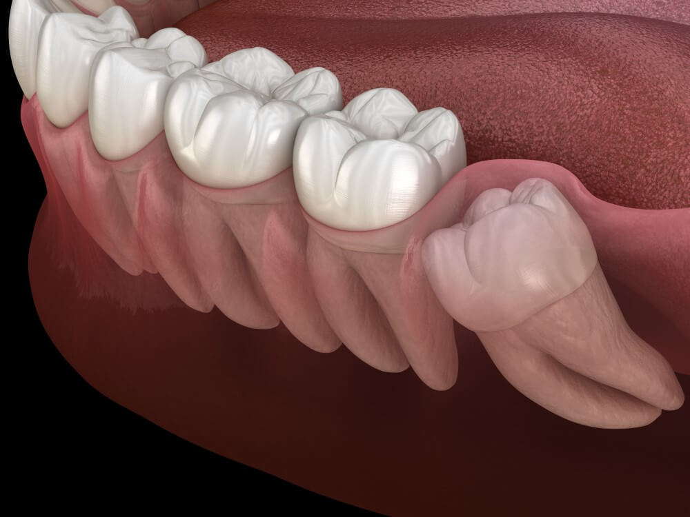
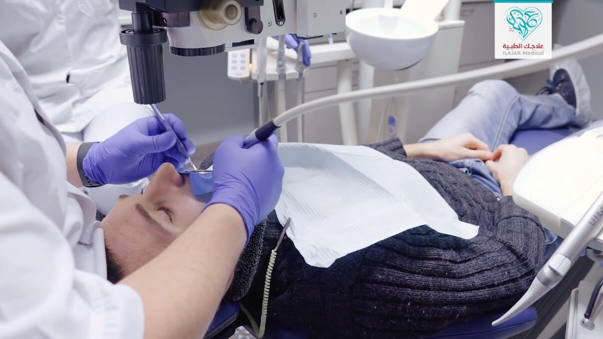

علاج وزراعة الأسنان
تعرَّف من خلال مقالاتنا على أحدث تقنيات علاج الأسنان، وأنجح الأساليب الوقائية للتمتع بأسنان صحيَّة قويَّة، إضافة إلى عمليات زراعة الأسنان، والجسور، والتقويم، وغيرها من المعلومات المتنوعة

مخاطر ومضاعفات ضرس العقل المدفون وكيف يتم علاجه؟
يواجه الكثير من الناس مشكلة الضرس المدفون, ويكثر السؤال عن علاج له. سنتحدث في هذا المقال حول ضرس العقل المدفون ومضاعفاته وأضراره على باقي الأسنان وكل ما ترغب بمعرفته حوله.
جدول المحتويات
ما هو ضرس العقل المدفون؟
تسمى الأسنان التي لم تكتمل بزوغها في غضون فترة زمنية معقولة "المدفونة" إذا تم غمرها بالكامل تحت اللثة و "شبه مدفونة" إذا اخترقت اللثة جزئيًا فقط , السبب الرئيسي له عندما لا يكون للسن مساحة كافية للخروج من اللثة كما ينبغي أو الإنسداد أو التموضع الخاطئ.ما هو ضرس العقل المدفون جزئيًا؟
ضرس العقل المدفون جزئياً هو الذي يخترق اللثة جزئياً فقط ويكون أكثر عرضةً للإصابة بالعدوى؛ هذا لأن شكله وزاويته يزيدان احتمالية حدوث التسوس ، تحدث عدوى الأسنان أو تجويفها عندما يُحدث فرط نمو البكتيريا ثقوبًا في طبقة المينا الخارجية الصلبة.

ضرس العقل المدفون في الفك السفلي
يمكن تصنيف ضرس العقل المدفون في الفك السفلي بناء على طبيعة الأنسجة المحيطة::
- الأنسجة الرخوة: يكون الجزء السطحي من السن مغطى فقط بأنسجة ناعمة.
- الأنسجة الصلبة: يكون الجزء المحيط بالسن من الأنسجة الصلبة ويفشل فيه ضرس العقل في الظهور بسبب منع العظم المغطي. يمكن تقسيم هذا الأثر إلى تأثيرات عظمية جزئية وكاملة.
ضرس العقل المدفون في الفك العلوي
يصنف ضرس العقل المدفون العلوي من صور الأشعة السينية وذلك حسب التموضع :
- الأنسي
- الوحشي
- العامودي
- الأفقي
- الوجني
- اللساني
- العكسي
وفي دراسة حديثة وجد أن الوضع العامودي هو الأكثر انتشاراً في الفك العلوي بنسبة 56.5%،
والوضع الأنسي الأكثر انتشاراً في الفك السفلي بنسبة 40.5%.

مخاطر و مضاعفات ضرس العقل المدفون
يمكن أن يؤدي الازدحام والضغط إلى تزاحم عام للأسنان ؛ وقد يحتاج المريض إلى علاجات تقويمية لتقويم الأسنان الملتوية ، حتى في حالة عدم وجود أعراض، يمكن أن تتسبب أضراس العقل المدفونة في إتلاف الأسنان الأخرى ويمكن أن تكون أكثر عرضة للإصابة بالعدوى ، يمكن أن تؤدي العدوى إلى رائحة الفم الكريهة ، وجع الأذن ، والصداع ، وطعم غريب في الفم ، وآلام في الأسنان ، وتورم اللثة الذي قد يكون أكثر احمرارًا من المعتاد، وتورم الفك، ونزيف اللثة.
تشمل الإصابات الأكثر خطورة التهاب خلايا السان الخد أو الحلق أو التهاب اللثة، وهو التهاب ينتج عن السموم الصادرة من التسوس الذي قد نتج من تجمع الأطعمة بسبب التموضع غير الصحيح للضرس .
ضرس العقل المدفون وتأثيره على الأعصاب
قد ينمو السن ضمن نسيج كيس في عظم الفك يمتلئ بالسوائل مكونًا كيسًا ، يمكن للكيس أن يتلف عظم الفك والأسنان والأعصاب المجاورة ، في حالات نادرة قد يتكون ورم غير سرطاني، وقد يلزم إزالة الأنسجة والعظام جراحيًا.
ضرس العقل المدفون وتأثيره على الأذن
من النادر أن تسبب أضراس العقل ألمًا في الأذن ، لكن من الممكن أن يتسبب الضرس المدفون في ألم الفك ، وقد ينتقل هذا الألم إلى الخارج باتجاه أذن المريض.
ضرس العقل المدفون والصداع
يمكن أن يُعزى الصداع إلى مجموعة متنوعة من الأسباب ، بما في ذلك أضراس العقل الناشئة أو المدفونة أو التي تحتاج إلى إزالتها ، وفقًا لجمعية طب الأسنان الأمريكية (ADA) تبدأ أضراس العقل في التحرك عبر عظم الفك ، وفي النهاية بعد حوالي 5 سنوات من ظهور المجموعة الثانية من الأضراس قد تخترق خط اللثة ، يمكن أن تسبب هذه الحركة عدم الراحة بما في ذلك الصداع.
عندما تنمو أضراس العقل في فم لا توجد به مساحة كافية لها ، يمكن أن يتسبب ذلك في تحريك الأسنان الأخرى، مما يؤدي إلى إطباق الفك السفلي والعلوي بطريقة غير مناسبة ، وقد يتسبب ذلك في الألم و الصداع.
ضرس العقل المدفون والدوخة
الالتهاب والألم حول مفاصل وعضلات الفك المصاحب لضرس العقل المدفون المتسوس قد يؤدي لاحقًا إلى الدوار ومشاكل في العين والأذن.
خراج ضرس العقل المدفون
بإمكان عدة أنواع من البكتيريا أن تسبب عدوى داخل ضرس العقل وحوله ، وخاصة عبر تشكيل كيس في عظم الفك ، وفي حالات نادرة قد يحدث الألم أيضًا بسبب العدوى حول ضرس العقل نفسه ، ومن المحتمل أن تنتشر العدوى إلى مناطق أخرى من الفم والرأس ، تشمل أنواع البكتيريا التي يمكن أن تؤدي إلى التهاب الأسنان ما يلي:
- المكورة العقدية
- الشعية الفطرية
- الهضمونية العقدية
- بريفوتيلا
- المغزلية
- المتكدسة
- الأيكينيلَةُ الأَكَّالَة
علاج وخلع ضرس العقل المدفون
يمكن أن تسبب الأضراس الثالثة أو أضراس العقل المدفونة بعدم الراحة وصداع خفيف إلى متوسط عندما تتحرك لأعلى عبر عظم الفك وتخرج من خط اللثة ، ويمكن أن يسبب تسوس الأسنان مضاعفات في الأسنان الأخرى والفم ، بالإضافة فإن جراحة الفم لإزالة أضراس العقل المدفونة أيضًا قد يحدث فيها مضاعفات بعد المعالجة ، لذا يتسائل الكثيرين عن متى يجب خلع الضرس العقل المدفون وإن كان يجب خلعه فور إكتشافه ، سنقوم بإلإجابة عن هذه التسائلات في الفقرات التالية:
هل يجب خلع ضرس العقل المدفون ؟
على الرغم من أن القلع هو علاج نموذجي لضرس العقل المدفون ، إلا أنه لا يحتاج كل شخص إلى إزالة ضرس العقل ، توصي جمعية طب الأسنان الأمريكية بفحص أضراس العقل بالأشعة السينية ومراقبتها لجميع المراهقين والشباب ، مع ذلك في الشباب لا تتشكل جذور السن بشكل كامل ، ويكون العظم المحيط بالسن أكثر ليونة ، هذا يسمح بإزالة الضرس بسهولة ويقل خطر تلف الأعصاب أو العظام أو الأسنان الأخرى فيميل الكثير من المرضى لخلعها من باب الوقاية.

متى يجب خلع ضرس العقل المدفون ؟
تشمل الأسباب الأكثر شيوعًا لإزالة أضراس العقل أن تكون مدفونة ومحتجزة في عظم الفك وتسبب الألم أو أعراض سنية أخرى ، في بعض الأحيان يحتاجون إلى إزالته على الفور قد يكون هذا هو الحال إذا تسببوا في ألم شديد أو إذا كان هناك تورم كبير وعدوى حول المنطقة ، يعتبر إزالتها أمرًا ملحًا بشكل خاص إذا كان المريض يعاني من صعوبة في التنفس أو البلع أو يعاني من الحمى ، يجب أن يرى طبيب الأسنان على الفور للعلاج الطارئ.
نقدّم لكم في علاجك الطبية، خدمات علاج الأسنان في تركيا بجودة ومعايير عالمية، ضمن عيادات مجهَّزة بأحدث الأجهزة والتقنيات المتطوّرة في إسطنبول، ومن خلال اختصاصات نوعيّة، على أيادي أمهر الأطباء الاستشاريين والاختصاصين والجراحين في طب الأسنان وجراحتها.
كيفية خلع ضرس العقل المدفون
قد يطلب الطبيب مراقبة الحالة في البداية لفترة ومن ثم ينصح بالعمل الجراحي.
عملية خلع ضرس العقل المدفون جراحيا
- قد يوصي طبيب أسنان المريض بإجراء جراحة قلع ، خاصة في حالة ضرس العقل المطمور ، قد يوصون أيضًا بالخلع إذا كان للسن المتأثر تأثير سلبي على الأسنان الأخرى.
- عادة ما يتم إجراء جراحة قلع الأسنان كإجراء خارجي في عيادة جراح الفم ، مما يعني أنه يمكن للمريض العودة إلى المنزل في نفس اليوم الذي تجري فيه العملية.
- سيسألك الجراح عن أي مشاكل قد تكون لدى المريض مع أسنانه وصحته العامة ، قد تتداخل بعض المشكلات الصحية مع الجراحة والتخدير والرعاية بعد الجراحة ، تساعد هذه المعلومات الجراح في التخطيط لأفضل علاج ممكن ، قد يوصي الجراح بإجراء اختبارات الدم أو الاختبارات الصحية الأخرى في حالة وجود حالات معينة مثل اضطراب النزيف.
- سيقوم الجراح بعمل شق لفتح اللثة لاستخراج ضرس العقل ، قد يلزم إزالة جزء صغير من العظم حتى يتمكن الجراح من الوصول بسهولة إلى السن ، قد يتعين تقسيم السن إلى شرائح بحيث يمكن إزالتها بشكل فعال وآمن ، قد يلزم إغلاق الشق في لثتك بالغرز ، تتحلل بعض الغرز ذاتيًا بعد بضعة أيام ، يقوم الجراح بإزالة الغرز الأخرى.
- ملاحظة: لمدة ست (6) ساعات قبل الجراحة لا يجب تناول الطعام أو الشراب ، وإذا كانت الجراحة ستُجرى في الصباح فلا يجوز أكل أو شرب أي شيء بعد منتصف الليل في الليلة السابقة ، سيعطي الجراح المريض تعليمات كاملة ومعلومات مكتوبة ليأخذها إلى المنزل.
عملية خلع ضرس العقل المدفون بنج كامل
ومن المحتمل أن يخضع لتخدير موضعي ، قد يستغرق التعافي من 7 إلى 10 أيام ، ولكن من المفترض أن يتمكن المريض من العودة إلى العمل أو المدرسة في غضون أيام قليلة من إجراء العملية.
ما بعد خلع ضرس العقل المدفون
بعد الجراحة سيُطلب من المريض الراحة لفترة من الوقت قبل العودة إلى المنزل ، سيقوم الجراح بفحصه خلال فترة التعافي ، عندما يكون الجراح راضيًا عن شفاء المريض سيسمح له بالعودة إلى المنزل، يجب أن يأخذ المريض أحد أفراد أسرته أو صديقه إلى المنزل بعد الجراحة ، يرتب هذا بشكل جيد مقدماً ، يُنصح بعدم قيادة السيارة بعد الجراحة؛ إذا كان المريض يقييم في المستشفى فسيعود إلى غرفته عندما يتعافى من التخدير.
نصائح بعد خلع ضرس العقل المدفون
- يطلب من المريض الاعتناء بنفسه والراحة في المنزل بعد الجراحة ، وأن لا يقود سيارة أو يشارك في تمارين نشِّطة أو يشغل الآلات ، قد يحتاج المريض إلى أخذ إجازة عدة أيام من العمل أو المدرسة أو الواجبات أخرى .
- على المريض أن لا يتناول أي مشروبات ضارة أثناء تناول مسكنات الألم أو المضادات الحيوي ، قد يكون الألم طفيفًا عند بعض الأشخاص وأكثر عند البعض الآخر ، وسيصف له الجراح مسكنًا للألم.
- يبدأ الألم عادة في الانخفاض بعد اليوم الثاني ومع ذلك، قد يظل بعض الأشخاص بحاجة إلى تخفيف الآلام بعد أسبوع واحد ، إذا كان المريض يشعر أن الألم لا يتحسن مع مرور الوقت رغم مرور أيام على العملية فعليه أن يبلغ طبيبه.
- يمكن للمريض الضغط على منطقة النزيف عن طريق العض برفق وثبات على قطعة من شاش القطن ، يساعد الضغط على وقف النزيف وتتشكل خثرة دموية ، من المهم عدم إزعاج المنطقة وإلا قد يبدأ النزيف مرة أخرى.
- قد تفرز اللثة الدم قليلاً لمدة يوم بعد الجراحة ، يجب أن يتوقف أي نزيف في اليوم الثاني، إذا لم يتوقف النزيف يجب إعلام الطبيب.
- يحدث التورم دائمًا تقريبًا بعد الجراحة ، ويمكن أن يختلف من طفيف إلى شديد ، يستغرق معظم التورم من 4 إلى 5 أيام حتى يستقر تمامً ، يمكن تقليل التورم عن طريق وضع كمادات الثلج على الخدين.
- قد يُطلب من المريض موعد للمتابعة مع جراحه ، إذ قد يرغب الجراح في التحقق من الشفاء وإزالة أي غرز إذا لزم الأمر.
تكاليف خلع الضرس في اسطنبول – تركيا
تبدأ تكلفة علاج الضرس وخلعه في اسطنبول من 75 دولار.أسئلة شائعة حول ضرس العقل المدفون
Impacted wisdom tooth
يمكن اكتشاف ضرس العقل المدفون بالفحص الدوري لدى الطبيب خاصة بالسن المتوقع لظهور ضرس العقل، في بعض الحالات قد لا يعاني المريض من أي أعراض ، و حالات أخرى قد يتسبب السن المطمور: احمرار اللثة أو تورمها أو نزيفها رائحة الفم الكريهة طعم سيء في الفم صعوبة في فتح الفم ألم عند فتح الفم ، أو عند المضغ والعض
نعم، يسبب رائحة كريهة.
نعم، قد يحدث التهاب للحق يصاحبه ألم.
لا ، لكن يمكن استخدامها لتخفيف الأعراض المصاحبة للإلتهاب كالألم ، ومن بين تلك الأعشاب النعناع وجذور الكركم ، ومع ملاحظة ان بعض مسكنات الألم الدوائية كالأسبرين تمنع عن الأطفال والمراهقين.
يجب إبلاغ الجراح إذا كانت المريض حامل أو ربما تكون حاملة، قد يؤثر ذلك على خيارات العلاج الخاصة بك ، بما في ذلك فحص الأشعة السينية، تخدير، علاج الآلام، أدوية المضادات الحيوية، والأدوية الأخرى، وما إذا كان ينبغي تأخير إزالة ضرس العقل.
بالعادة , لا تتجاوز 45 دقيقة.
تحرير: علاجك الطبية©


المصادر:
researchgate , webmd , orthodontisteenligne , exodontia ,medicalnewstoday ,specialistomfs. ,healthline ,dentalimplantcostguide ,penndios. ,ncbi
اطلع على أحدث المنشورات والأخبار الطبية
عمليات شفط الدهون بالفيزر في تركيا والأسعار 2021
يعتبر شفط الدهون بالفيزر من أفضل عمليات علاج السمنة المفرطة. تعرف معنا على مميزات وعيوب شفط الدهون بالفيزر وكيف تتم العملية وشاهد الفرق قبل وبعد في تركيا.
طرق علاج طول النظر في تركيا وأحدث التقنيات
يعاني الكثير من كبار السن وحتى البالغين من مرض طول النظر . سنتحدث في هذا المقال عن كيفية علاج طول النظر وأسباب هذا المرض ونسبة نجاح العلاج .
الفرق بين زراعة الشعر في ايران وتركيا 2021
بالرغم من أن أسعار زراعة الشعر بين تركيا وايران لا تختلف كثيرا إلا أن هنالك الكثير من الفروق التي قد تحدد لك الدولة الأفضل لزراعة الشعر فيها.
طرق علاج قصر النظر في تركيا وأحدث التقنيات
يعاني الكثير من الأطفال وحتى البالغين من مرض قصر النظر. سنتعرف في هذا المقال على أفضل طرق علاج قصر النظر وأسباب هذا المرض ونسبة نجاح العلاج .